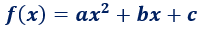
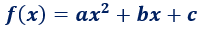
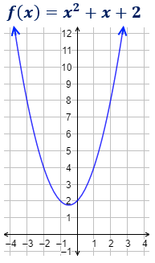
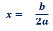
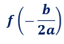
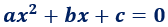
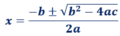

Definición
Una función cuadrática (o parabólica) es una función polinómica de segundo grado. Es decir, tiene la forma

siendo a≠0.
Esta forma de escribir la función se denomina forma general.
Una función cuadrática (o parabólica) es una función polinómica de segundo grado. Es decir, tiene la forma

siendo a≠0.
Esta forma de escribir la función se denomina forma general.
La gráfica de una función cuadrática siempre es una parábola.

Las parábolas tienen forma de ∪ (si a>0) o de ∩ (si a<0).
Además de la orientación, el coeficiente a es la causa de la amplitud de la función: cuanto mayor es |a|, más rápido crece (o decrece) la parábola, por lo que es más cerrada.
Las funciones cuadráticas tienen un máximo (si a<0) o un mínimo (si a>0). Este punto es el vértice de la parábola.
La primera coordenada del vértice es

Y la segunda coordenada es su imagen:

EJEMPLO
Calculamos el vértice de la función

Identificamos los coeficientes:

Como a es negativo, la parábola tiene forma de ∩. El vértice es un máximo.
La primera coordenada del vértice es

Calculamos la segunda coordenada:

Por tanto, el vértice es el punto

Gráfica:

Una parábola siempre corta el eje de ordenadas (eje Y) en un punto. Como esto ocurre cuando x=0, se trata del punto (0,c) puesto que f(0)=c.
Una función corta al eje de abscisas cuando y=0. Por tanto, para hallar estos puntos de corte, tenemos que resolver una ecuación cuadrática:

Solucionador Ecuaciones
Como una ecuación cuadrática puede tener una, dos o ninguna solución, puede haber uno, dos o ningún punto de corte con el eje X. Así, el número de puntos de corte con el eje X viene dado por el signo del discriminante Δ=b2−4⋅a⋅c:
Si Δ<0, la parábola no corta el eje X.
Si Δ=0, la parábola corta el eje X en un punto.
Si Δ>0, la parábola corta el eje X en dos puntos.
Para calcular las coordenadas necesitaremos usar la fórmula cuadrática:

EJEMPLO
Calculamos los puntos de corte de la función

Los coeficientes de la ecuación son a=1, b=0 y c=−1.
Eje Y:
El punto de corte con el eje Y es (0,−1).
Eje X:
Resolvemos la ecuación de segundo grado:

Hay dos soluciones: x=1 y x=−1.
La segunda coordenada es 0.
Por tanto, tenemos los puntos de corte

Gráfica:

podemos ver el siguiente video:
... Gennialy:
Obra publicada con Licencia Creative Commons Reconocimiento Compartir igual 4.0